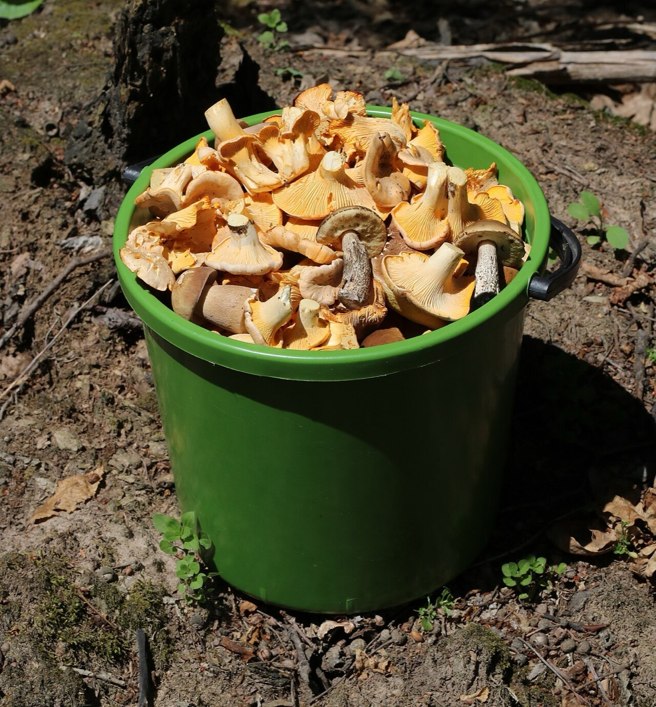

Сколько на самом деле стоит килограмм лисички
Каждый сезон в комментариях повторяется один и тот же спор. Один человек говорит, что берёт лисичку у бабушки на трассе почти даром. Второй показывает ценник из супермаркета и не верит своим глазам. Оба правы: это не один и тот же товар и не одна и та же цена.
Четыре цены одного гриба
Между лесом и прилавком гриб проходит несколько рук, и на каждой к нему прибавляется не жадность, а работа:
- Цена сборщика. То, что человек получает на пункте приёма за ведро, принесённое из леса.
- Цена заготовителя. Наша. Сюда уже входят транспорт, сортировка, отбраковка, холод и потери.
- Цена базы. Оптовик, который держит склад в городе и разбивает партию на мелкие.
- Цена полки. Магазин добавляет фасовку, наценку, списание непроданного и аренду.
Разница между первой и последней цифрой бывает кратной. Это не значит, что кто-то кого-то обманывает. Это значит, что вы покупаете разный объём работы.
Дешёвая лисичка на трассе означает не выгодную сделку, а отсутствие сортировки, холода и ответственности за партию.
Почему цена скачет внутри сезона
Дикорос не выращивают, его находят. Прошёл дождь в нужную неделю, гриб пошёл стеной, цена валится. Стояла жара, сборщики возвращаются с пустыми вёдрами, и та же лисичка стоит вдвое дороже через семь дней.
Поэтому прайс на дикоросы живёт неделю, а не квартал. Любой, кто называет цену «на сезон» в июне, либо заложил в неё риск с запасом, либо потом переиграет.
Что спрашивать, чтобы сравнивать честно
Прежде чем сравнивать два предложения, уточните три вещи: состояние, объём партии и кто именно продаёт, заготовитель или перекуп. Без этих трёх цифр сравнение бессмысленно.